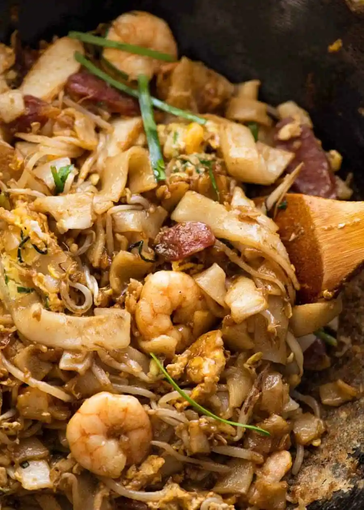

Kway Teow

Description
Char Kuey Teow is basically flat rice noodles stir-fried
with shrimp, bloody cockles, Chinese lap cheong (sausage),
eggs, bean sprouts, and chives in a mix of soy sauce.
Ingredients Required
- 1 oz. (30 g) seeded dried red chilies, soak in water
- 2 fresh red chilies, seeded
- 3 small shallots or pearl onions, peeled and sliced
- 1 teaspoon oil
- 1 pinch salt
- 5 tablespoons soy sauce
- 1.5 tablespoons dark soy sauce
- 1 tablespoon sugar
- 0.5 teaspoon fish sauce
- 0.5 teaspoon salt
- 2 dashes ground pepper powder
Steps
- Grind all the ingredients of the chili paste using
a mini food processor until fine. Heat up a wok with
1 teaspoon oil and stir-fry the chili paste until aromatic.
Dish out and set aside.
- Clean the wok thoroughly and heat it over high flame until
it starts to smoke. Add 2 tablespoons oil/lard into the wok
and add half the portion of chopped garlic into the wok
and do a quick stir.
- Transfer six (6) prawn out of water and half the sausage
slices into the wok. Make a few quick stirs with the
spatula until the prawn starts to change color and you
smell the aroma of the Chinese sausage.
- Add half the bean sprouts into the wok.
- Immediately follow by 8 oz. or half portion of the flat
noodles.
- Add 2 1/2 tablespoons of the sauce into the wok and stir
vigorously to blend well. Using the spatula, push the
noodles to one side, and add a little oil on the empty
area and crack an egg on it. Use the spatula to break the
egg yolk and stir to blend with the egg white. Flip the
noodles and cover the egg, and wait for about 15 seconds.
- Add about 1/2 tablespoon of chili paste
(if you like it spicy, add more) and some cockle clams
into the wok.Continue to stir-fry and make sure the
egg is cooked through. Add chives, do a couple of
quick stirs, dish out and serve immediately.